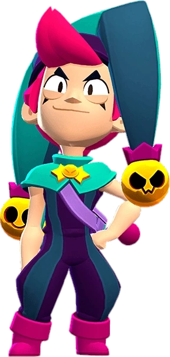

¿Quién es Chester?
Chester se burlará de quien sea hasta sacarlo de sus casillas, ¡y cuanto más, mejor! Y si ese alguien es Mandy, ¡no parará hasta hacerla rabiar!
Chester es un Brawler Legendario con una salud moderada y con un daño que varia por sus cascabeles. Su ataque es lanzar cascabeles que son 4. Sus súpers pueden variar entre explosión (tipo artillería), aturdimiento (disparo largo) envenenamiento (lanza gas a lo Emz) ralentizamiento (deja un área con una mecánica como el súper de Spike) y curación( sale un caramelo encima de su cabeza y empieza a curar puntos de salud) Y el súper no es visible a no ser que tengas la segunda habilidad estelar de Chester así que es un tanto aleatorio.
|  |
NIVEL DE FUERZA 11 |
Sus gadgets
DADO TRUCADO: Chester obtiene un nuevo súper aleatorio, distinto al que esta usando. |
GRAGEAS: Chester se come una gragea de sabor misterioso que saca de su sombrero |
Sus habilidades estelares
 |
LLUVIA DE CASCABELES: El primer cascabel de las ráfagas de Chester inflige un 150% de daño. |
 |
VEO VEO: Chester siempre sabe cuál será su proximo súper. |
 Braian Arancibia
Braian Arancibia Aya El Baarar
Aya El Baarar